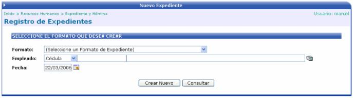
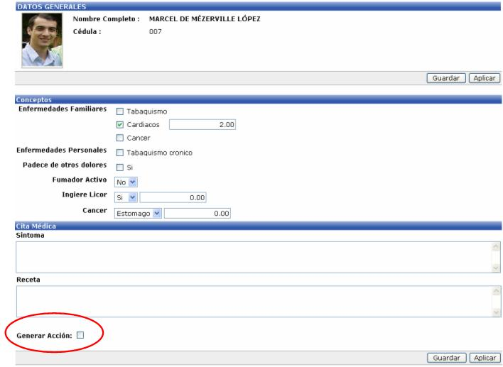
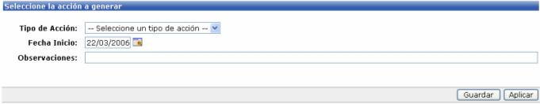

En esta sección se crean o se consultan los expedientes médicos de los empleados de la empresa.

Dependiendo del formato seleccionado así será el formulario que se despliegue para llenar la información.
También permite generar la información ingresada, como una acción de personal, si el usuario así lo necesita.

Si se activa el check “Generar Acción” se desplegara una sección nueva a llenar:

Una vez digitada la información se debe de guardar y luego aplicar para generar un registro nuevo en la lista de Acciones de Personal.
Cabe aclarar que esta aplicación no genera movimiento en la nómina, hasta que se aplique la acción.